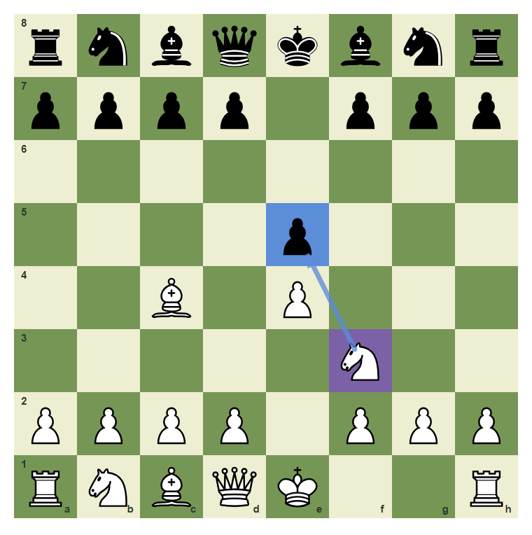
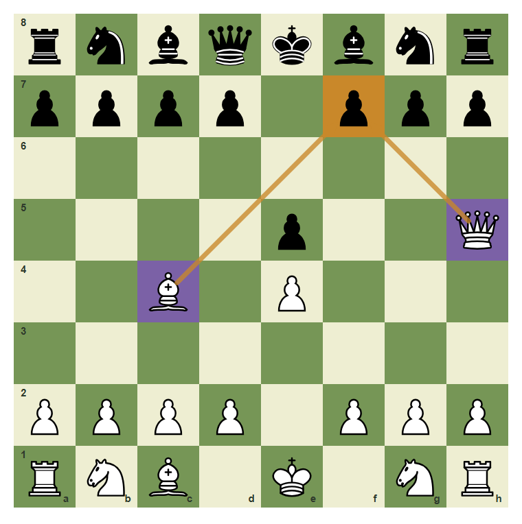
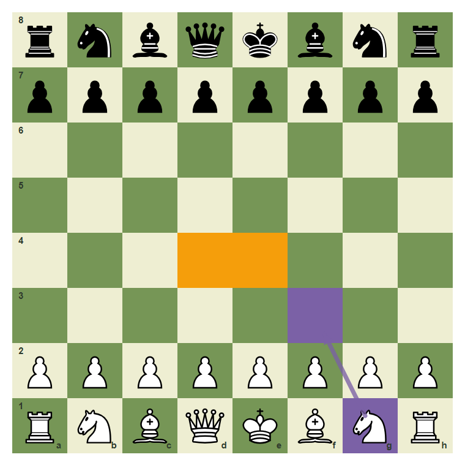
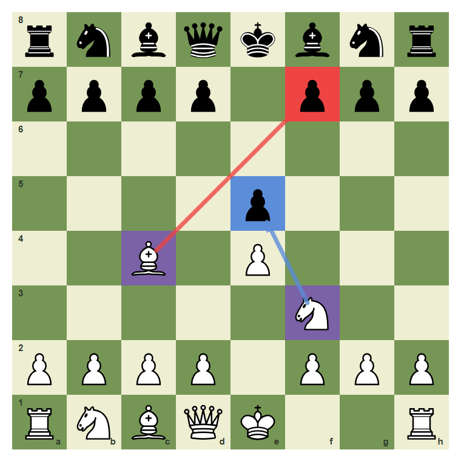
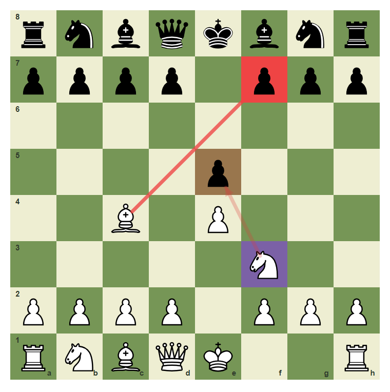

The Three Questions: Checks, Captures, Threats
Build the CCT scan that protects every move.
- Scan checks before attractive captures.
- Spot free captures and direct threats.
- Use one checklist before choosing a move.
The Scan Comes First
Survival chess begins before you touch a piece. Ask three questions in order: What checks exist? What captures exist? What threats exist? This habit stops many beginner losses immediately.
Check candidate on f7

The bishop can check on f7. Checks must be seen before quieter moves.
Capture candidate on e5

The knight also sees e5, but a capture is checked after checks.
Threat target on f7

Queen and bishop both point at f7. That is a threat map.
A quiet start still needs a scan

Even the first move should be chosen after seeing the center and development squares.
Rank the forcing moves

The scan finds both c4-f7 and f3-e5. The check has priority.
Play the forcing check
Use the CCT order and play the checking move from c4 to f7.

Common mistake: capture before checking
The natural capture on e5 may be playable, but beginners should train the scan order. Checks first, then captures, then threats.

The wrong order starts with f3-e5 while the forcing check on f7 waits.
Chapter Checkpoint
Which question comes first in the survival scan?
Which question comes first in the survival scan?
A move that attacks the king is called a:
A move that attacks the king is called a:
After checks and captures, what do you scan?
After checks and captures, what do you scan?